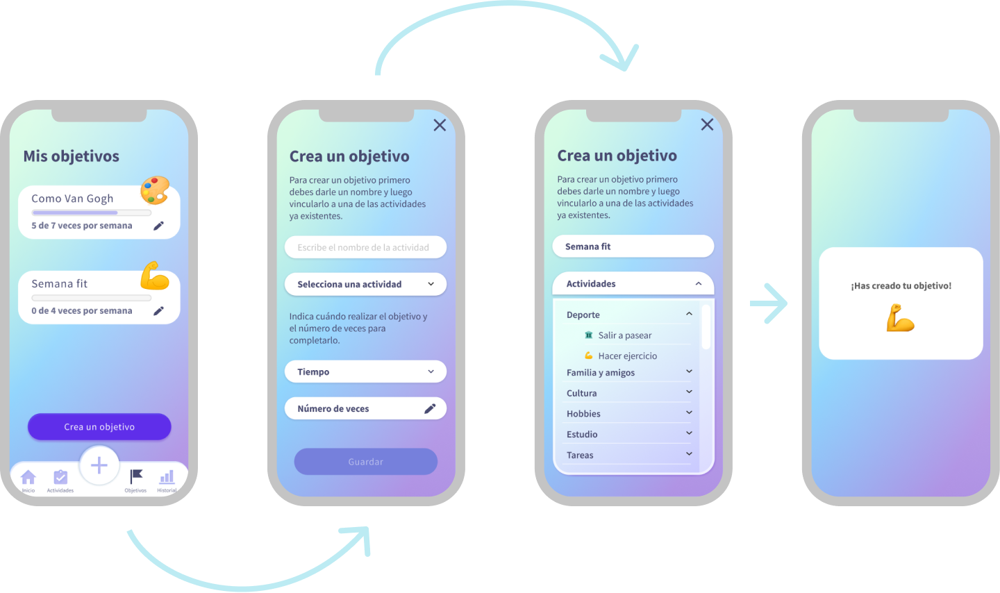

MyPersona
-
year
2021
-
motive
Final project for my MFA in Digital Experience Design
MyPersona is the final project for my MFA in Digital Design Experience. In this, we had to prove all we have learnt, and since it was also a group project, we also learnt to work in a team. The theme that we were given and the one that we had to work on was "Health during COVID-19". Below you'll find all the information related to this project.
What is MyPersona
Methodology
Through the whole project we used the Double Diamond Methodology in order to proceed step by step.
The idea was to have a human centric design that covers a real need, and that is why we decided to work
following the double diamond structure, as it helped us identify real value for our hypothetical users.
Following this scheme, I'll try to explain (step by step), the parts that I consider were crucial in our development of the app.
Context and Discovery
As previously said, we had the thematic area for the app but not the idea, so the first thing that we had to do was to analyze and find a real need in the area of "Health in COVID-19". So the first steps was to understand what we were facing, and that involved a media analysis, defining our archtypes (for later on working on our protopersonas and User Personas) and running some surveys (aimed to understand the general state of people's physical and mental status, for which we received more than 130 answers).
With these results, we could filter many thematic areas and information that would be useful in the interviews that we conducted.
The interviewed were carefully selected as we needed them to fit our protopersonas, so that we could better understand what was lacking
in the Health area regarding COVID-19.
With our interview results and after classifing the information, we could extract patterns that would be used in order to create our User Personas
and extract Insights (which we would later on translate into Opportunities).
Definition
In these, we collected and organized all the information that we previously had to create our User Persona and project a Customer Journey Map, which would help us spot the pain points and frictions that the user faces in certain occasions, altogether with the general experience of the user.

In this part, I should higlight the Insights and Opportunities that we extracted and later on used to find ideas for the app.
The final idea for the app was selected after using a prioritization matriz in order to understand which one would have more value
for the user and a better distinction in the market.
Once we had the idea, we conducted an Inception to align the team's thoughts and work.
Development
The development part was crucial as, while working with Agile methodologies, create User Stories and categorize them in a Roadmap to organize our workload. We worked in 4 sprints, each sprint being a whole month. Once we had these, our process was a constant state of Prototyping - Testing - Iterating.
Below you'll find some images of the wireframes and some userflows, together with the information architecture, which served organize the app different layers and insides.

Delivery
This is the app's final look. While I am working on a revamp, the internal structure will be the same.

MyPersona serves as a journal in which the user introduces daily activities and the emotion that this evoked on themselves. The emotion will have an effect on the virtual creature, which will serve the user realise what does themselves well and wrong.
The user will be able to set objectives on the activities, which will be rewarded with achievements once they have completed them.
They will also receive recommendations based on all this data on what are the activities that do the user best, helping them feel better. The app also counts with a track record which can be easily accessed to understand the user's advancements through time.
Conclusions
This project was my first approach to a real project in real life, and although I have not shown in here
all the steps that we have gone through, I feel happy about the result and feel completely prepared to keep
working on it as I am doing at the moment.
Right now, my main focus is to keep working on it as I believe it has many potential and I could be learning
even more, doing more User Tests and keeping on iterating.
Thank you!